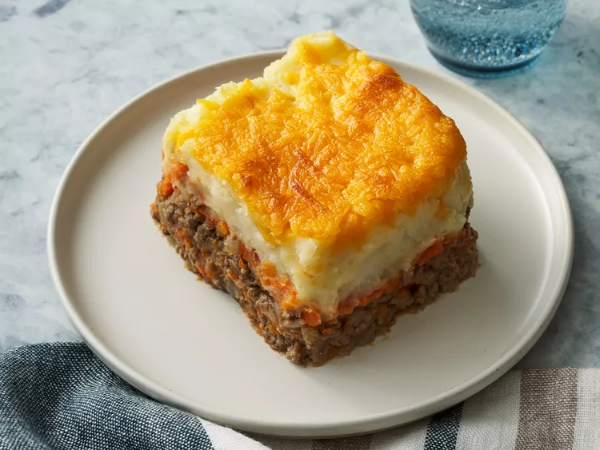

Shepherd's Pie

Description
This shepherd's pie is a comforting casserole of savory ground beef stew, topped with a layer of cheesy mashed potato that's guaranteed to satisfy even the pickiest of eaters. Plus, it's a great way to sneak some extra veggies into dinner!
Shepherd's pie is the ultimate all-in-one dish. It's got everything you could ask for in a meal: hearty meat, starchy potatoes, colorful veggies, and gooey cheese. It's no wonder why the Allrecipes community has given this recipe over 1,500 5-star reviews.
Ingredients
- Ground Beef
- Mashed Potatoes
- Vegetables
- Flour
- Ketchup
- Beef Broth
- Cheese
Steps
- Boil the potatoes until tender, but still slightly firm. Mash the potatoes and mix in the butter, cheese, and onion. Season with salt and pepper to taste.
- Boil the carrots until tender, but still slightly firm. Mash the carrots.
- Cook the onions and ground beef until the onions are clear and the beef is browned. Drain the fat, then add flour, ketchup, and beef broth. Simmer the mixture for 5 minutes.
- In a casserole dish, add the ground beef mixture. Next add the carrots, then the mashed potatoes. Finally, top the casserole with cheese and bake until golden brown.